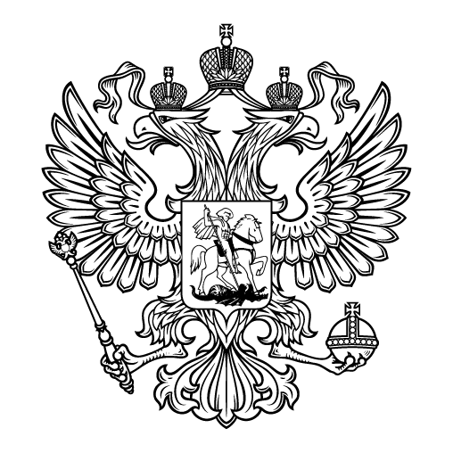
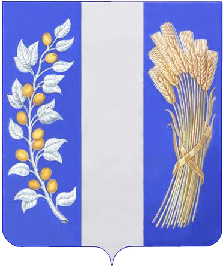

Афиша:

Новости:

День ветеранов боевых действий
Сегодня День ветеранов боевых действий, в Парке Победы состоялся митинг в память о погибших ребятах, которые выполняя свой долг, защищая интересы нашей Родины, гордость за ветеранов. Живая память , потому что живы те, то воевал.
Подробнее>Призывники
23 мая состоялась торжественная отправка призывников в ряды Вооруженных сил РФ. С приветственным словом выступил Смолин В.В. - Глава МО «Бичурский район», Гаврилов С.А. -военный комиссар Бичурского района. С напутственным словом выступила мама призывника Федотова Елена Ивановна. Призывникам пожелали успешной службы, чтобы достойно несли звание защитника Отечества!
Подробнее>Навстречу алым парусам
22 мая на площади Районного Дома культуры состоялся вечер вальса «Навстречу алым парусам» выпускников 2023 года Бичурского района. С напутственными словами к ребятам обратился глава МО «Бичурский район» Смолин В.В. Выпускники БСОШ 1,2,3,4,5, Мало – Куналейская, Окино — Ключевская, Новосретенская , Дунда — Киретская СОШ исполнили яркий, красивый вальс выпускников. На вечере прозвучали поздравления классных руководителей, родителей, солистов студии «Созвездие».
Подробнее>9 Мая с. Бичура
В Парке Победы состоялся торжественный митинг «Помнить, чтобы жить!», С праздником Победы поздравили Глава района Смолин В.В., глава МОСП «Бичурское» Тюрюханов В.В, депутат НХ РБ Савельев А.И,военный комиссар Гаврилов С.А, председатель «Совета женщин» Фомина А.Г. Почтили минутой молчания .Зажег Вечный огонь Ветеран тыла, Почетный гражданин Ефимов Ф.Е. Участники митинга возложили цветы к памятникам павшим героям — землякам.
Подробнее>Навстречу алым парусам
22 мая на площади Районного Дома культуры состоялся вечер вальса «Навстречу алым парусам» выпускников 2023 года Бичурского района. С напутственными словами к ребятам обратился глава МО «Бичурский район» Смолин В.В. Выпускники БСОШ 1,2,3,4,5, Мало – Куналейская, Окино — Ключевская, Новосретенская , Дунда — Киретская СОШ исполнили яркий, красивый вальс выпускников. На вечере прозвучали поздравления классных руководителей, родителей, солистов студии «Созвездие».
Подробнее>-

Министрство культуры Российской Федерации
-
Министрство культуры Республика Бурятия
-

Администрация Бичурского района
-
Бичура.ru
-
Бичурский хлебороб